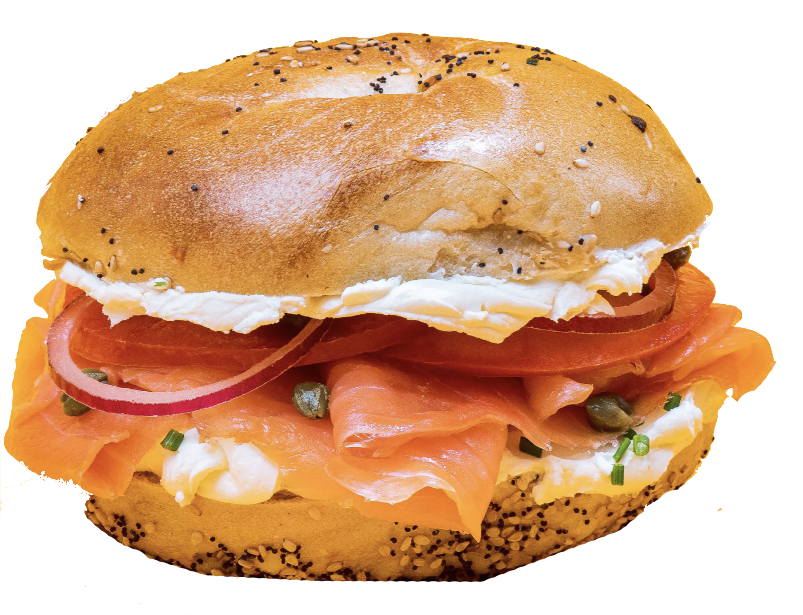

I will be using Bootstrap and different JavaScript libraries including Google Fonts and Google Maps. Throughout the process of creating the website, I will conduct research about the different elements I want to add and incorporate those accordingly!
